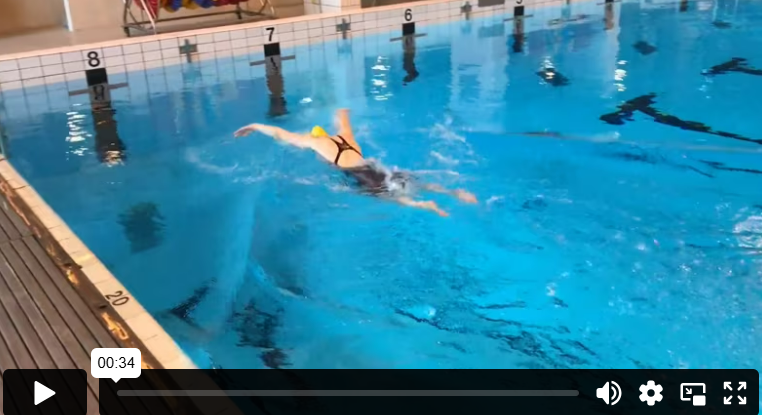

فراشة
السباحة الفراشة هي أسلوب سباحة يُستخدم تقريبًا فقط في المسابقات. نشأت هذه الطريقة من سباحة الصدر، حيث بدأ السباح برفع الذراعين فوق سطح الماء بدلاً من دفعهما داخل الماء. تطورت السباحة الفراشة إلى أسلوب سريع وانفجاري للتقدم في الماء، لكنها تتطلب طاقة كبيرة. ليست فقط أصعب طريقة للسباحة من حيث الجهد، بل هي أيضًا الأكثر تعقيدًا من الناحية التقنية.
تعتمد التقنية على سحب الماء إلى الخلف تحت الجسم بكلتا اليدين معًا، في الوقت نفسه تقوم بركل كلا الساقين كما تفعل الدولفين عند حركة ذيلها. الصعوبة في السباحة الفراشة تكمن في تنسيق حركة الركل مع حركة الذراع لتحقيق انسيابية في السباحة.